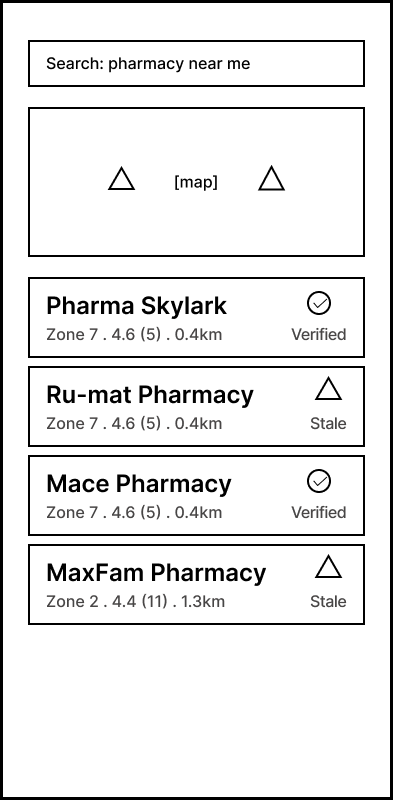
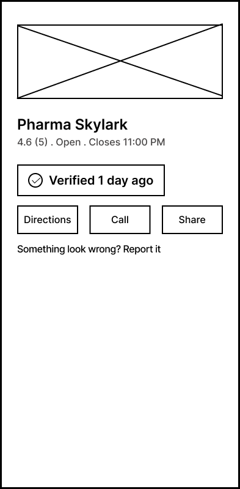
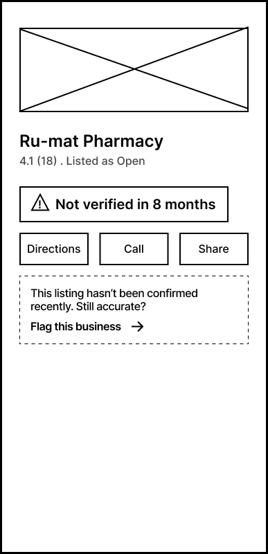
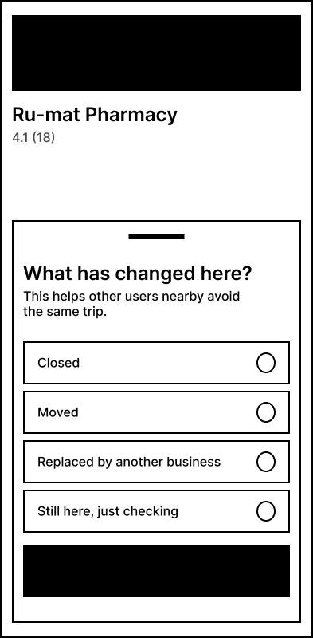

A concept for confirming a business is actually still there before
someone spends their only errand window finding out it isn't.
In Progressresearch phaselast updated 2026
Type
Independent study
Focus
Location trust
Phase
Research → IA
Method
Persona, probes
01 - The Problem
Maps doesn't know when a place has actually changed.
People search for a business, follow the directions, and arrive to
find it closed, relocated, or replaced, sometimes months after the
fact. NearMe doesn't try to solve discovery broadly. It focuses on one
narrow thing: trust in whether a listing still reflects reality.
What happens
A listing looks current but isn't. The user has no way to tell
until they've already made the trip.
Who it costs most
Errand-driven, time-pressured users who don't have spare minutes
to verify a listing before they leave.
Where trust breaks
Repeated bad experiences quietly erode confidence in Maps
specifically, even as the person keeps using it.
What's missing
A visible signal of currency, and a fast way for the person who
discovers the change to fix it for the next user.
02 - Primary Persona
Adaeze Okonkwo, 34
AO
Adaeze Okonkwo
Operations Coordinator · Lagos
Splits her day between the office and errands, picking up
prescriptions for her father, stopping at ATMs between meetings,
occasionally scouting clinics or service providers for family. Not
tech-illiterate, just impatient with anything that wastes her
limited errand-time. Defaults to Google Maps because it's fast and
familiar and has been burned enough times by outdated listings that
a small part of her braces for it every time she heads out on a pin.
Needs
Confidence, before she leaves, that a business is still at the
listed location
A signal of how current the info is not just a static listing
A fast way to flag a closed/moved business herself
All of this to cost seconds, not minutes
Behaviors
Searches mid-errand, on the move, with partial attention
Takes the top result at face value
Has started quietly hedging calling ahead, buffer time
Vents to coworkers after a wasted trip
03 - Research Plan
Three questions, one cultural probe kit.
Designed to capture in-the-moment attitudes rather than
recalled-after-the-fact ones.
Q1 What goes through your mind in the
moments right before you leave to visit a business you found on
Maps?
Q2 How do you currently decide whether a
listing is trustworthy or "up to date" enough to act on?
Q3 When a listed business turns out to
be gone, what do you do next and how does it change how you use Maps
afterward?
Maps Diary
A short booklet logging what participants searched for, how
confident they felt, and what actually happened on arrival.
Photo Task
"Take a photo any time a place doesn't match what you expected."
Left open on purpose, lets people define "didn't match"
themselves.
Postcard Prompts
Half-finished sentences to complete: "The last time Maps let me
down, I felt…" / "I'd trust a listing more if…"
Trigger Object
A mock listing card, shown with: "Would you trust this today? Why
or why not?" a reaction to something concrete, not abstract
recall.
04 - Use Scenario
Adaeze and the prescription run.
"She isn't motivated by curiosity or thoroughness, she's motivated by
not wanting to fail her father, and not wanting to explain to her
manager why a twenty-minute errand took an hour."
Opens Google Maps on her phone as she's heading out
Searches for the pharmacy where she usually gets her father's
prescription
Taps her preferred/nearest match from the results
Scans the listing quickly, looking for a signal of how current it is
Sees a currency signal on the listing
Reassured, heads straight out, no hesitation, no backup plan
location verified 1 day ago
Why this scenario, this narrow
A vague goal like "wants accurate maps" doesn't reveal much. "Needs
medication in a 20-minute gap between meetings" reveals exactly what's
at stake if the solution fails. It also confirms Adaeze scans, she
doesn't dig, which means any confidence signal has to be legible in a
glance, not something she has to seek out or interpret.
05 - Where This Is Headed
A trust-signal system, not a redesign.
A visible "last verified" timestamp on every listing
A low-friction, crowdsourced flag/confirm flow, the person who
discovers a closure fixes it for everyone after them
Benchmarking against how Waze and delivery apps handle real-time "is
this still here/open" signals
Next steps
Research ✓Information architectureLow-fi wireframesUsability testing
06 - Interface & Interaction Design
Four screens, one decision point.
Not a redesign of Maps, a trust signal layered onto the flow Adaeze
already knows.

Screen 1
Search Results
→

Screen 2
Detail Verified
→

Screen 3
Detail Not Recently Verified
→

Screen 4
Flag Business
Goal-mapping walkthrough
Is the goal achievable?The search results alone confirm it real, nearby pharmacies with
ratings and distance, before she commits to any one of them.
What does she do?Taps a result, exactly as she always has. No new gesture, no
learning curve, the new information only appears after the
tap.
Is she getting closer?This is the pivotal moment: a checkmark or warning badge gives an
instant answer to the question she's actually asking, can I trust
this enough to go?
When is she done?Not when she reaches the pharmacy. She's done with the interface
the moment she decides, head out confidently, or pause to call
ahead.
What this activity surfaced
The real product isn't the flag-business feature, it's the
verification badge. Flagging only matters because the badge creates
the moment of doubt that makes it necessary. This activity also made a
constraint explicit that hadn't been stated before: the interface has
to work for someone scanning, not reading, which is why the badge
leans on shape/icon distinction rather than text.